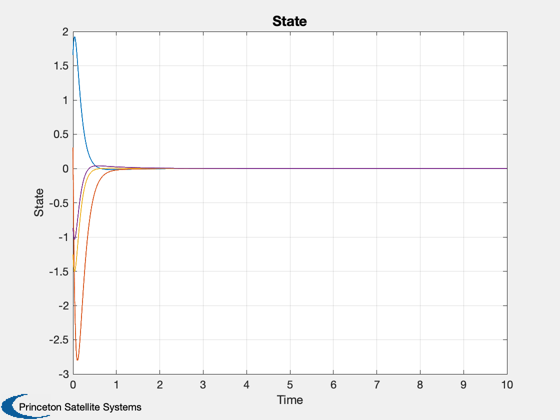
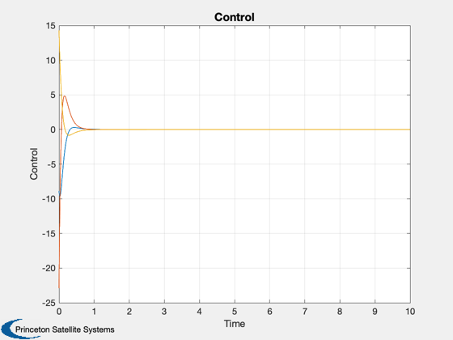

Design and demonstrate a controller using QCR
Design a multi-input / multi-output LQ controller using QCR with a state/input cross-coupling term. Simulate and plot the results.
------------------------------------------------------------------------ See also QCR ------------------------------------------------------------------------
Contents
%--------------------------------------------------------------------------- % Copyright (c) 2012 Princeton Satellite Systems, Inc. % All rights reserved. %---------------------------------------------------------------------------
Design the LQ controller
N=4; % # states M=3; % # inputs % Plant matrix ra=randn(N); a=ra'*ra; % Input matrix b=randn(N,M); % QCR will create a regulator of the form "u = -Kx" to minimize the cost: % J = †{(1/2)[u'ru + x'qx] + u'nx + x'nu}dt. % q: state penalty matrix rq=randn(N); q=rq'*rq; % r: input penalty matrix rr=randn(M,M); r=rr*rr'; % n: state/input cross-coupling penalty matrix n=randn(N,M); % Design LQ controller [K,sinf] = QCR(a,b,q,r,n);
Discretize system
dT = 1e-3; [ak,bk] = C2DZOH(a,b,dT);
Simulate
nSim = 1e4; x = zeros(N,nSim); u = zeros(M,nSim); x(:,1) = randn(N,1); for k=1:nSim-1 u(:,k) = -K*x(:,k); x(:,k+1) = ak*x(:,k) + bk*u(:,k); end
Plot Time History
t = 0:dT:(nSim-1)*dT; Plot2D(t,x,'Time','State') Plot2D(t,u,'Time','Control') %-------------------------------------- % $Date$ % $Id: fbc9bf1af14512d3d998a53d5eb4d63fb0097622 $ 